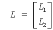
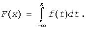
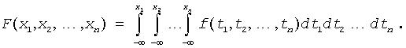

Intel® oneAPI Math Kernel Library Developer Reference - Fortran
AH |
Denotes the conjugate transpose of a general matrix A. See also conjugate matrix. |
AT |
Denotes the transpose of a general matrix A. See also transpose. |
band matrix |
A general m-by-n matrix A such that aij = 0 for |i - j| > l, where 1 < l < min(m, n). For example, any tridiagonal matrix is a band matrix. |
band storage |
A special storage scheme for band matrices. A matrix is stored in a two-dimensional array: columns of the matrix are stored in the corresponding columns of the array, and diagonals of the matrix are stored in rows of the array. |
BLAS |
Abbreviation for Basic Linear Algebra Subprograms. These subprograms implement vector, matrix-vector, and matrix-matrix operations. |
BRNG |
Abbreviation for Basic Random Number Generator. Basic random number generators are pseudorandom number generators imitating i.i.d. random number sequences of uniform distribution. Distributions other than uniform are generated by applying different transformation techniques to the sequences of random numbers of uniform distribution. |
BRNG registration |
Standardized mechanism that allows a user to include a user-designed BRNG into the VSL and use it along with the predefined VSL basic generators. |
Bunch-Kaufman factorization |
Representation of a real symmetric or complex Hermitian matrix A in the form A = PUDUHPT (or A = PLDLHPT) where P is a permutation matrix, U and L are upper and lower triangular matrices with unit diagonal, and D is a Hermitian block-diagonal matrix with 1-by-1 and 2-by-2 diagonal blocks. U and L have 2-by-2 unit diagonal blocks corresponding to the 2-by-2 blocks of D. |
c |
When found as the first letter of routine names, c indicates the usage of single-precision complex data type. |
CBLAS |
C interface to the BLAS. See BLAS. |
CDF |
Cumulative Distribution Function. The function that determines probability distribution for univariate or multivariate random variable X. For univariate distribution the cumulative distribution function is the function of real argument x, which for every x takes a value equal to probability of the event A: X≤x. For multivariate distribution the cumulative distribution function is the function of a real vector x = (x1,x2, ..., xn), which, for every x, takes a value equal to probability of the event A = (X1≤x1 & X2≤x2, & ..., & Xn≤xn). |
Cholesky factorization |
Representation of a symmetric positive-definite or, for complex data, Hermitian positive-definite matrix A in the form A = UHU or A = LLH, where L is a lower triangular matrix and U is an upper triangular matrix. |
condition number |
The number κ(A) defined for a given square matrix A as follows: κ(A) = ||A|| ||A−1||. |
conjugate matrix |
The matrix AH defined for a given general matrix A as follows: (AH)ij = (aji)*. |
conjugate number |
The conjugate of a complex number z = a + bi is z* = a - bi. |
d |
When found as the first letter of routine names, d indicates the usage of double-precision real data type. |
dot product |
The number denoted x · y and defined for given vectors x and y as follows: x · y = Σixiyi. Here xi and yi stand for the i-th elements of x and y, respectively. |
double precision |
A floating-point data type. On Intel® processors, this data type allows you to store real numbers x such that 2.23*10−308< | x | < 1.79*10308. For this data type, the machine precision ε is approximately 10−15, which means that double-precision numbers usually contain no more than 15 significant decimal digits. For more information, refer to Intel® 64 and IA-32 Architectures Software Developer's Manual, Volume 1: Basic Architecture. |
eigenvalue |
See eigenvalue problem. |
eigenvalue problem |
A problem of finding non-zero vectors x and numbers λ (for a given square matrix A) such that Ax = λx. Here the numbers λ are called the eigenvalues of the matrix A and the vectors x are called the eigenvectors of the matrix A. |
eigenvector |
See eigenvalue problem. |
elementary reflector(Householder matrix) |
Matrix of a general form H = I−τvvT, where v is a column vector and τ is a scalar. In LAPACK elementary reflectors are used, for example, to represent the matrix Q in the QR factorization (the matrix Q is represented as a product of elementary reflectors). |
factorization |
Representation of a matrix as a product of matrices. See also Bunch-Kaufman factorization, Cholesky factorization, LU factorization, LQ factorization, QR factorization, Schur factorization. |
FFTs |
Abbreviation for Fast Fourier Transforms. See"Fourier Transform Functions". |
full storage |
A storage scheme allowing you to store matrices of any kind. A matrix A is stored in a two-dimensional array a, with the matrix element aij stored in the array element a(i,j). |
Hermitian matrix |
A square matrix A that is equal to its conjugate matrix AH. The conjugate AH is defined as follows: (AH)ij = (aji)*. |
See identity matrix. |
|
identity matrix |
A square matrix whose diagonal elements are 1, and off-diagonal elements are 0. For any matrix A, AI = A and IA = A. |
i.i.d. |
Independent Identically Distributed. |
in-place |
Qualifier of an operation. A function that performs its operation in-place takes its input from an array and returns its output to the same array. |
Intel® oneAPI Math Kernel Library |
Abbreviation for Intel® oneAPI Math Kernel Library. |
inverse matrix |
The matrix denoted as A−1 and defined for a given square matrix A as follows: AA−1 = A−1A = I. A−1 does not exist for singular matrices A. |
LQ factorization |
Representation of an m-by-n matrix A as A = LQ or A = (L 0)Q. Here Q is an n-by-n orthogonal (unitary) matrix. For m≤n, L is an m-by-m lower triangular matrix with real diagonal elements; for m > n,  where L1 is an n-by-n lower triangular matrix, and L2 is a rectangular matrix. |
LU factorization |
Representation of a general m-by-n matrix A as A = PLU, where P is a permutation matrix, L is lower triangular with unit diagonal elements (lower trapezoidal if m > n) and U is upper triangular (upper trapezoidal if m < n). |
machine precision |
The number ε determining the precision of the machine representation of real numbers. For Intel® architecture, the machine precision is approximately 10−7 for single-precision data, and approximately 10−15 for double-precision data. The precision also determines the number of significant decimal digits in the machine representation of real numbers. See also double precision and single precision. |
MPI |
Message Passing Interface. This standard defines the user interface and functionality for a wide range of message-passing capabilities in parallel computing. |
MPICH |
A freely available, portable implementation of MPI standard for message-passing libraries. |
orthogonal matrix |
A real square matrix A whose transpose and inverse are equal, that is, AT = A-1, and therefore AAT = ATA = I. All eigenvalues of an orthogonal matrix have the absolute value 1. |
packed storage |
A storage scheme allowing you to store symmetric, Hermitian, or triangular matrices more compactly. The upper or lower triangle of a matrix is packed by columns in a one-dimensional array. |
Probability Density Function. The function that determines probability distribution for univariate or multivariate continuous random variable X. The probability density function f(x) is closely related with the cumulative distribution function F(x). For univariate distribution the relation is  For multivariate distribution the relation is  |
|
positive-definite matrix |
A square matrix A such that Ax · x > 0 for any non-zero vector x. Here · denotes the dot product. |
pseudorandom number generator |
A completely deterministic algorithm that imitates truly random sequences. |
QR factorization |
Representation of an m-by-n matrix A as A = QR, where Q is an m-by-m orthogonal (unitary) matrix, and R is n-by-n upper triangular with real diagonal elements (if m≥n) or trapezoidal (if m < n) matrix. |
random stream |
An abstract source of independent identically distributed random numbers of uniform distribution. In this manual a random stream points to a structure that uniquely defines a random number sequence generated by a basic generator associated with a given random stream. |
RNG |
Abbreviation for Random Number Generator. In this manual the term "random number generators" stands for pseudorandom number generators, that is, generators based on completely deterministic algorithms imitating truly random sequences. |
Rectangular Full Packed (RFP) storage |
A storage scheme combining the full and packed storage schemes for the upper or lower triangle of the matrix. This combination enables using half of the full storage as packed storage while maintaining efficiency by using Level 3 BLAS/LAPACK kernels as the full storage. |
s |
When found as the first letter of routine names, s indicates the usage of single-precision real data type. |
ScaLAPACK |
Stands for Scalable Linear Algebra PACKage. |
Schur factorization |
Representation of a square matrix A in the form A = ZTZH. Here T is an upper quasi-triangular matrix (for complex A, triangular matrix) called the Schur form of A; the matrix Z is orthogonal (for complex A, unitary). Columns of Z are called Schur vectors. |
single precision |
A floating-point data type. On Intel® processors, this data type allows you to store real numbers x such that 1.18*10−38 < | x | < 3.40*1038. For this data type, the machine precision (ε) is approximately 10−7, which means that single-precision numbers usually contain no more than 7 significant decimal digits. For more information, refer to Intel® 64 and IA-32 Architectures Software Developer's Manual, Volume 1: Basic Architecture. |
singular matrix |
A matrix whose determinant is zero. If A is a singular matrix, the inverse A-1 does not exist, and the system of equations Ax = b does not have a unique solution (that is, there exist no solutions or an infinite number of solutions). |
singular value |
The numbers defined for a given general matrix A as the eigenvalues of the matrix AAH. See also SVD. |
SMP |
Abbreviation for Symmetric MultiProcessing. Intel® oneAPI Math Kernel Library offers performance gains through parallelism provided by the SMP feature. |
sparse BLAS |
Routines performing basic vector operations on sparse vectors. Sparse BLAS routines take advantage of vectors' sparsity: they allow you to store only non-zero elements of vectors. See BLAS. |
sparse vectors |
Vectors in which most of the components are zeros. |
storage scheme |
The way of storing matrices. See full storage, packed storage, and band storage. |
SVD |
Abbreviation for Singular Value Decomposition. See also Singular value decomposition section in "LAPACK Auxiliary and Utility Routines". |
symmetric matrix |
A square matrix A such that aij = aji. |
transpose |
The transpose of a given matrix A is a matrix AT such that (AT)ij = aji (rows of A become columns of AT, and columns of A become rows of AT). |
trapezoidal matrix |
A matrix A such that A = (A1A2), where A1 is an upper triangular matrix, A2 is a rectangular matrix. |
triangular matrix |
A matrix A is called an upper (lower) triangular matrix if all its subdiagonal elements (superdiagonal elements) are zeros. Thus, for an upper triangular matrix aij = 0 when i > j; for a lower triangular matrix aij = 0 when i < j. |
tridiagonal matrix |
A matrix whose non-zero elements are in three diagonals only: the leading diagonal, the first subdiagonal, and the first super-diagonal. |
unitary matrix |
A complex square matrix A whose conjugate and inverse are equal, that is, that is, AH = A-1, and therefore AAH = AHA = I. All eigenvalues of a unitary matrix have the absolute value 1. |
VML |
Abbreviation for Vector Mathematical Library. See"Vector Mathematical Functions". |
VSL |
Abbreviation for Vector Statistical Library. See"Statistical Functions". |
z |
When found as the first letter of routine names, z indicates the usage of double-precision complex data type. |